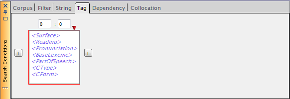
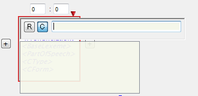
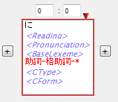
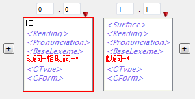
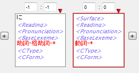

語単位の検索を行うTagSearchは、ChaKi.NETにおける標準的な KWIC作成方法であるといえます。
- 形態素解析済みでないソースから作成されたコーパスでTagSearchを 行うことはできません。
- 文境界を超える条件は作成できません。
TagSearchを行うには、まずSearch Conditionsパネルにおいて、 "Tag"タブを選択し、次の条件入力画面に移ります。

語条件Boxに条件を入力する
このタブ内に、任意数の語の並びに関する条件をグラフィカルに入力することで TagSearch条件を作成します。初期状態で１つの語条件Box（上図の赤枠の部分）が 表示されている状態ですが、このBoxは"Surface（表層形）", "Reading（読み）", "Pronunciation（発音）", "BaseLexeme（基本形の表層形）", "PartOfSpeech（品詞）", "CType（活用型）", "CForm（活用形）"という語属性カラムを持っています。 *1 それぞれのカラムの上でマウス左クリックすることにより、そのカラムへ文字列を 入力することができます。例えば"Surface"カラム上でクリックすると次のような 状態になります。

ポップアップする領域にエディットボックスがありますので、ここにSurfaceすなわち 語の表層形を指定することができます。左にある２つのボタンはそれぞれ、
- R: 入力文字列を正規表現と解釈する（StringSearchと同様）
- C: Case Sensitive（RがONのときは無視される）
の意味です。 また、下には過去に使用された候補文字列が表示されますので、候補があればクリックして 選択することも可能です。 入力を終えてリターンキーを押すかまたはポップアップ領域の外をクリックするとこの 表示が消え、Surfaceカラムにあった<Surface>の表示が入力した文字列に 置き換わっています。
同様に、"Reading"等のカラムにも条件となる文字列を同じ方法で入力することができます。 条件として指定する必要のないカラムは空欄のままとします。
- 既に入力したカラムを空欄に戻すには、空白を入力します。
必要なカラムに条件を書き込むことで、１つの語に対するマッチング条件が完成します。 下に例を示します。

語の相対位置の指定
ここで、語条件Boxの上部にある数字の意味ですが、これはKWICの中心となる位置を0とした 語の文内相対位置範囲を表します。"0:0"は中心語そのものを表します。"m:n"ならば、中心語(+m)語目 ～(+n)語目（m ≤ n）の位置にその語があることを示します。このエディットボックスには自由に数字を入力することが 可能ですが、"2:1"など間違った条件を入力するとマッチする語がないという結果になりますので 注意してください。
この条件で検索を開始(Commandパネルの"Search")すると格助詞「に」を中心とした KWICが作成されますが、ここではもう一つ語条件Boxを追加してから検索開始することにします。
語条件Boxの追加
語条件Boxの左右にある「+」ボタンは語条件Boxを追加するためのものです。 右側の+を押すと右側に一つBoxが追加されます。相対位置範囲は自動的に"1:1"となり、 中心語のすぐ右側に位置する語に対する条件となることがわかります（変更も可）。 このBoxに、１語目と同様にして下のような条件を入力します。

この条件ですと、KWICの中心語にはすべて格助詞の「に」が並ぶことになりますが、 興味のある対象が「どのような動詞が格助詞『に』の次に現れるか」ということで あった場合には、動詞の方を中心語としてKWICを作成する方が自然です。 そこで、２番目の条件Boxを中心語に設定しなおすことにします。これには、 Boxの右上にある赤い逆三角形をしたボタン("Centerize"ボタン）を押します。 表示は次のように変わります。

- 語条件Boxを消去するには、Boxの上でマウスを右クリックし、ポップアップした コンテクストメニューから、"Delete"を選択します。
KWIC検索の実行
以上で条件が完成しましたので、検索を開始します。KWIC結果は次のようになります。
{kind=link}
KWICビューのCenterカラムヘッダをクリックすると、Centerに現れる動詞を昇順・降順で ソートすることができます。
なお、作成した検索条件やKWICデータは、データベースに保管されるわけではありません。 ファイルにセーブしたりエクスポートを行わなければ、プログラム終了とともに失われてしまいます。
- *1旧ChaKiではコーパスに合わせて不要なカラムを非表示にできましたが、ChaKi.NETではまだ対応していません。